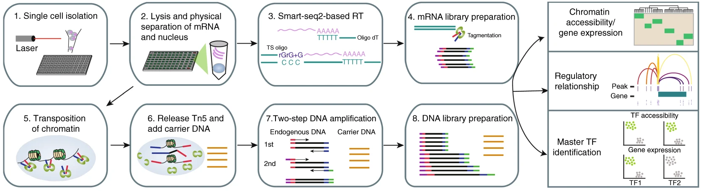

The single cell chromatin accessibility and transcriptome sequencing (scCAT-seq) physically separates mRNA and chromatin from single cells. The method uses gentle lysis to release mRNA into the supernatant, then transfer supernatant to new tubes and leave nuclei at the original tube. After that, mRNA and nuclei are processed separately. For mRNA-seq, it uses the SMART-seq method to construct sequencing library; for chromatin accessibility, it uses standard ATAC-seq workflow to construct sequencing library. Click the links to those methods in the main page to see how exactly libraries are made.
